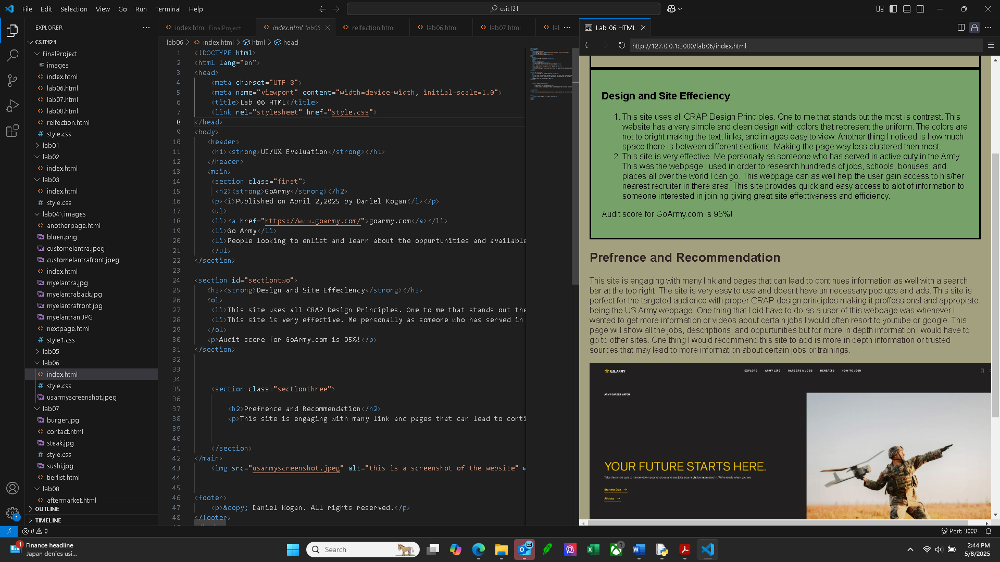

Lab 06: Homepage
This lab focused on building a basic homepage using semantic HTML and CSS layout techniques. This site uses all CRAP Design Principles. One to me that stands out the most is contrast. This website has a very simple and clean design with colors that represent the uniform. The colors are not to bright making the text, links, and images easy to view.
